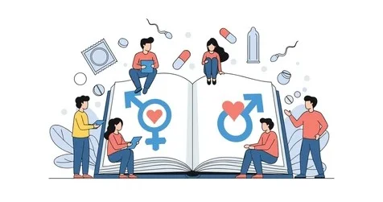

¿Prevención del Embarazo?
Informacion esencial para comprender la prevencion del embarazo e incluso educacion sexual.
¿Qué es la prevención del embarazo?
La Prevención Del Embarazo es el conjunto de medidas, conocimientos y acciones que permiten evitar embarazos en mujeres, especialmente durante la adolescencia. No se trata solamente de métodos anticonceptivos, sino de una Educación Sexual Integral que incluya:
- - Conocimiento del propio cuerpo y desarrollo -
- - Información sobre salud reproductiva -
- - Habilidades para la toma de decisiones responsables -
- - Comunicación asertiva en las relaciones -
- - Acceso a servicios de salud confiables -
Educación Sexual Integral
Más que información biológica, es formación para la vida.
¿Qué es?
La Educación Sexual Integral es un proceso educativo continuo que aborda la sexualidad de forma integral, más allá de lo biológico. Brinda información científica, promueve relaciones saludables, el respeto a la diversidad y la previene de riesgos.
¿Para qué sirve?
- Prevenir embarazos no planificados y no deseados
- Reducir la incidencia de infecciones de transmisión sexual
- Crear relaciones sanas promovidas por el respeto e igualdad
- Proteger contra el abuso sexual mediante el conocimiento de derechos y límites
Su Importancia
Es fundamental para el desarrollo saludable de adolescentes. Reduce en un 50% los embarazos no deseados y previene abusos sexuales al enseñar sobre consentimiento y límites personales.
Palabras Claves
Impacto de la Educación Sexual
Consecuencias positivas en el desarrollo integral
Impacto Psicológico
Autoestima fortalecida
Mayor aceptación del propio cuerpo y confianza en sí mismo
Reducción de ansiedad
Menos preocupaciones y miedos sobre la sexualidad
Mejor comunicación
Habilidad para expresar necesidades y establecer límites
Desarrollo emocional
Manejo adecuado de emociones en las relaciones
Impacto Físico
Salud reproductiva
Conocimiento y cuidado del propio sistema reproductivo
Prevención de ETS
Reducción del 60% en infecciones de transmisión sexual
Embarazos saludables
Cuando sean planificados, menor riesgo de complicaciones
Bienestar general
Mejor calidad de vida y atención a la salud integral